GLICD
Enregistrer le ou les document(s) numérisé(s) :
Simple-scan
Avant de commencer, se reporter au chapitre Scanner :
Scanner avec l'application Numériseur de documents (Simple-scan)
- Après avoir numérisé le ou les document(s) :
- Positionner le pointeur de la souris sur l'icône « Enregistrer », comme sur l'image ci-dessous.
Simple clic > Icône « Enregistrer »
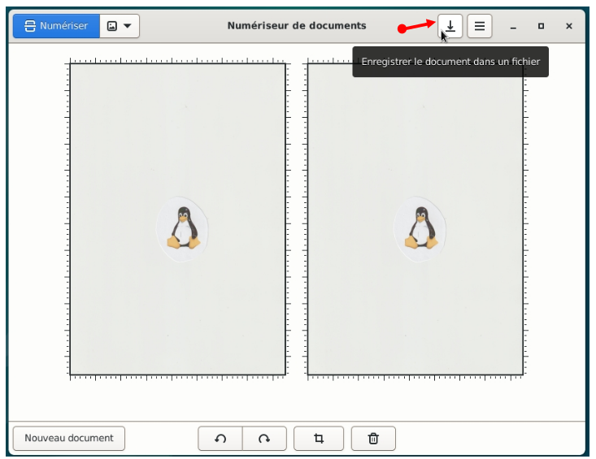
- La fenêtre « Enregistrer sous... » s'ouvre avec des paramètres configurés par défaut :
- Format du fichier dans lequel il sera enregistré, ici en PDF.
- Compression : permet de réduire la taille du fichier.
- Menu latéral pour se déplacer dans différents dossiers ou périphériques du PC.
Ici « Documents » (Documents est en bleu).
- Le nom du fichier qui sera enregistré.
- Le chemin ou sera enregistré le fichier.
Ici, sous le dossier « Documents » (Documents est grisé).
- L'icône pour créer un dossier
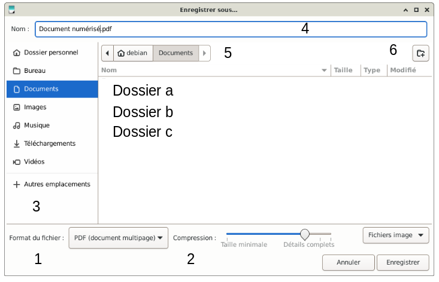
- 1 - Changement du format de fichiers
Simple clic > PDF (documents multipage)
Une liste déroulante s'ouvre pour faire un choix de formats de fichiers :
PDF (documents multipage); JPEG (compressé); PNG (sans perte); WebP (compressé)
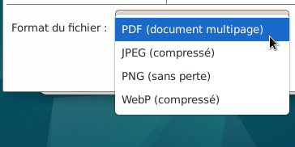
- 2 - Compresser le fichier
Positionner le pointeur de la souris sur le curseur
Maintenir appuyé
Déplacer la souris vers la gauche pour compresser le fichier.
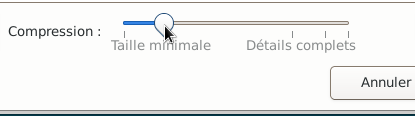
- 2 - Ne pas compresser le fichier
Positionner le pointeur de la souris sur le curseur
Maintenir appuyé
Déplacer la souris vers la droite pour ne pas compresser le fichier.
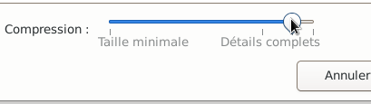
- 3 - Changer le chemin d'accès où sera enregistré le fichier
Simple clic > Dossier personnel (dans le menu latéral)
Dans la zone principale apparaît les dossiers.
Il ne reste plus qu'à choisir le chemin d'accès souhaité.
Dans cet exemple, l'enregistrement se fera dans le dossier « Public »
Nota : Si l'enregistrement se fait sur un support externe : Simple clic > Autres emplacements
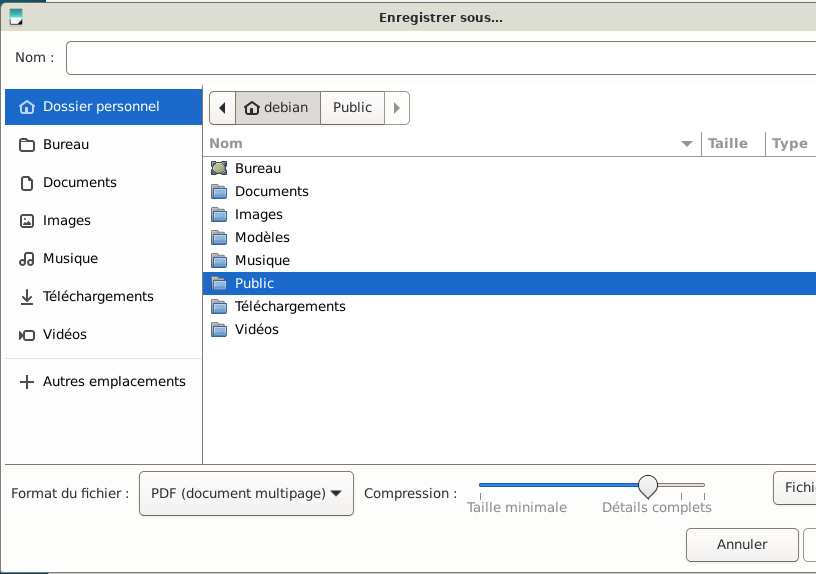
- 4 - Le nom du fichier, dans cet exemple : « Tux_2_pages »
- 5 - Le chemin d'enregistrement est : Debian > Public
Nota : Simple clic > Debian, permet de revenir sous la racine Debian.
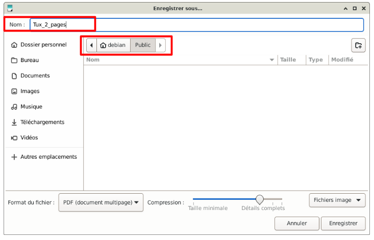
- 6 - Il est possible d'ajouter un dossier : Simple clic > Icône créer un dossier (6)
- Si besoin, fermer la fenêtre « Enregistrer sous...» : Simple clic > Petite croix en haut à droite de cette fenêtre.
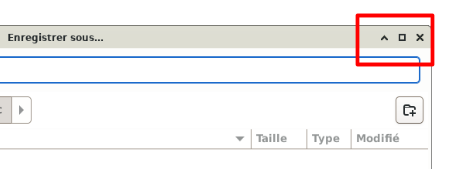
- Récapitulation :
- Format du fichier : PDF (document multipage)
- Compression : Détails (par défaut)
- Le nom du fichier est : « Tux_2_pages »
- Le fichier sera enregistré sous : Debian > Public
- Aucun dossier ajouté
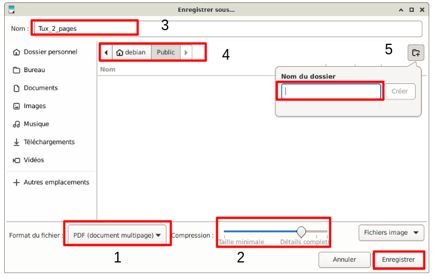
- Simple clic > Enregistrer
La fenêtre « Enregistrer sous... » disparaît.
- Quitter l'application Numériseur de documents : Simple clic > Petite croix en haut à droite.
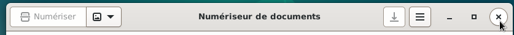
- Vérifier l'emplacement du fichier.
Si besoin, se rendre au chapitre >
Se déplacer dans le gestionnaire de fichiers
Le fichier a été enregistré au format PDF (document PDF) avec une taille de 398.4 Kio.
Nota : Pour envoyer un fichier sur un réseau (internet), il faut vérifier la taille du fichier.
Si celui-ci est trop important, il ne sera pas envoyé.
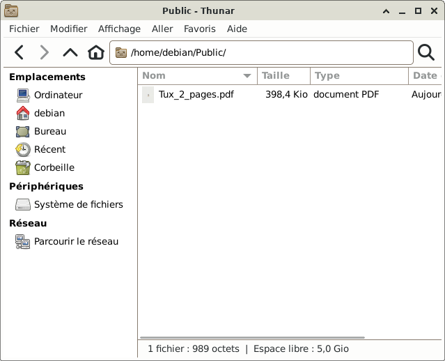
Si besoin, se rendre au chapitre Scanner >
Modifier les préférences de numérisation.

Retour
Informations sur le logiciel libre et
Merci.
Marques déposées :
Ce site ne fait pas partie de Debian, n'est pas produit par le projet
Debian, ni approuvé par le projet Debian.
Ce site n'est pas affilié à Debian. Debian est une marque déposée appartenant
à Software in the Public Interest, Inc.
Contribuer :
Ce site ne fait pas partie de XFCE, n'est pas produit par le projet
XFCE, ni approuvé par le projet XFCE.
Ce site n'est pas affilié à XFCE.
Ce site est juste réalisé par un passionné.